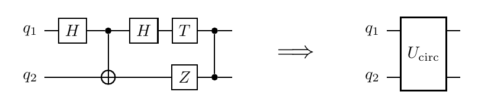

Legato.jl
| Documentation | Build Status | License |
A circuit isn't a sequence of gates. It's a unitary. Compile it as one.

Legato.jl is the circuit-to-pulse compilation layer of the Piccolo.jl ecosystem. Given a gate-level circuit and a hardware device profile, Legato synthesizes a single optimized control pulse that implements the whole circuit as one block unitary $U$ — skipping gate decomposition, scheduling, and gate-boundary error accumulation.
Why this is different
A conventional quantum compiler decomposes a circuit into native gates, schedules them, and lowers each gate to a precomputed pulse. That pipeline leaves pulse-level fidelity on the table — every gate boundary is a re-initialization, every idle qubit is accumulating decoherence, every decomposition hides joint optimization opportunities.
Legato treats the circuit as a unitary $U_\text{circ}$ and solves directly for a control pulse $u(t)$ on the device system $H_\text{sys}(u)$:
\[\begin{aligned} \min_{u(t),\,\varphi}\quad & 1 - \mathcal{F}\!\left(U_\text{circ},\, V_\varphi\, U(T;\,u)\right) \\ \text{subject to}\quad & \dot{U}(t) = -i\,H_\text{sys}(u(t))\,U(t),\quad U(0) = I, \\ & u_\text{min} \le u(t) \le u_\text{max}. \end{aligned}\]
\[V_\varphi\]
are per-qubit virtual-Z phases (free-phase). $\mathcal{F}$ is the Pedersen subspace fidelity on the computational levels.
| Conventional | Legato | |
|---|---|---|
| Optimization unit | one gate | one block (or whole circuit) |
| Gate-boundary error | $N$ × per-gate error | one solve, no boundaries |
| Idle decoherence | every non-active qubit at every layer | actively driven through the block |
| Hardware coupling | hidden in decomposition | first-class — pulse uses the device's actual drift |
| Duration | $\sum$ gate durations + scheduling slack | min-time compressed against fidelity floor |
Quick example
Cold-start a single-qubit X gate on a 2-level model of an IBM Heron r3 transmon:
using Random, Legato
Random.seed!(0xc0ffee)
device = HeronR3(n_levels = 2) # qubit subspace; drop the kwarg for 3-level (with leakage)
circuit = GateCircuit([GateOp(:X, (1,))], 1)
report = compile(
circuit, device;
max_iter = 1500, T_ns = 60.0, N_knots = 21,
Q = 100.0, R = 1e-4, ddu_bound = 10.0,
free_phase = true,
)Pulse fidelity : 0.99283
Pulse duration : 60.0 ns
Wall clock : ~120 s on a workstationThe full runnable script is at scripts/x_heronr3_2level.jl.
For multi-qubit circuits or high-fidelity (≥ 5-nines) results, the substrate cold-start path isn't enough — install Strettissimo to enable parallel multistart, catalog warm-starts, and min-time compression. Public Legato lands you in the right basin; Strettissimo lands you at the bottom.
Compiling QEC blocks
The flagship use case: compile each block of a multi-block QEC circuit (e.g. surface-code syndrome extraction) once into a reusable pulse. Subsequent rounds reuse the cached pulse instead of re-decomposing.
report = compile(syndrome_circuit, device; strategy = :warm_stitch_transmon):warm_stitch_transmon (in Strettissimo, Harmoniqs' private competitive layer) does the full pipeline:
- Transpile to native gates:
to_native(circuit, device)— pure circuit rewriting, e.g.CNOT(c,t) → H(t)·CZ(c,t)·H(t). - Schedule the native gates serially (or with parallelization in v0.4+).
- Stitch catalog pulses into a single warm-start pulse for the whole block.
- Joint-solve the block as one optimization — eliminates gate-boundary errors, exploits the device drift.
- Min-time compress against a fidelity floor.
What's where
Legato is a substrate that runs productively on small problems with no proprietary dependencies. Harmoniqs' competitive compilation intelligence lives in a private overlay package, Strettissimo.jl, which plugs in via Legato's strategy-registry seam:
| Feature | Legato (public, MIT) | Strettissimo (private) |
|---|---|---|
Circuit IR (GateCircuit, GateOp, circuit_unitary) | ✅ | — |
Gate library (qft, toffoli, ccz, ...) | ✅ | — |
Device profiles (HeronR3, Willow, Ankaa3, ...) | ✅ | — |
to_native transpile pass | ✅ | — |
compile_block substrate pipeline | ✅ | — |
BilinearIntegrator (cold-start, 1-2Q) | ✅ substrate | — |
SplineIntegrator (multi-qubit scaling) | — | ✅ |
| Pulse catalog warm-starts | — | ✅ |
| Graph-based partitioning | — | ✅ |
| Parallel multistart solver | — | ✅ |
| QEC kernel compilation | thin entry point | ✅ implementation |
| Stagnation / landscape diagnostics | — | ✅ |
Legato users get a working substrate. Harmoniqs collaborators and NDA partners get the competitive layer.
Installation
using Pkg
Pkg.add("Legato")For multi-qubit problems Legato's default BilinearIntegrator can exhaust memory during evaluator construction. Harmoniqs collaborators with access to Piccolissimo.jl can swap in a scalable spline-based integrator by loading Strettissimo, which auto-installs the override on __init__.
Status
| Version | What ships |
|---|---|
| v0.2 | Circuit IR, device profiles, compile_block, four substrate seams |
| v0.3 | CompilationStrategy registry, select_strategy, :default strategy |
| v0.4 | to_native(circuit, device) transpile pass |
| v0.5 | Rename Stretto → Legato (re-registered under a new UUID) |
| v0.6 (planned) | QASM import |
| v0.7+ | Framework adapters (Qiskit / Cirq via PythonCall) |
Contributing
# Run substrate tests (no private deps)
julia --project=. test/runtests.jl
# Run with Piccolissimo for multi-qubit smoke tests
julia --project=. -e 'using Pkg; Pkg.develop(path="../Piccolissimo.jl")'
LEGATO_FULL_TESTS=1 julia --project=. test/runtests.jl
# Build docs
./docs/get_docs_utils.sh
julia --project=docs docs/make.jlSee also
- Piccolo.jl — the quantum optimal control engine Legato sits on top of.
"Some people stretto. Some people wait."